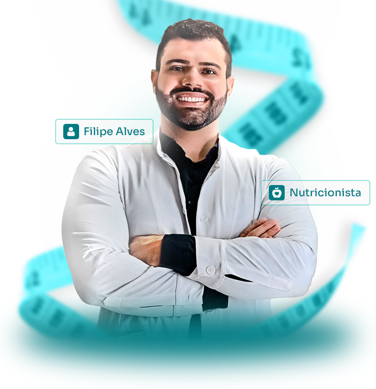

Emagrecimento sustentável
Estratégia feita para continuar funcionando depois das primeiras semanas.
Aumente sua autoestima, tenha mais energia e sinta orgulho do seu corpo com um plano alimentar feito especialmente pra você.

O objetivo é emagrecer sem transformar comida em culpa. Plano alimentar, rotina e suporte caminham juntos.
Estratégia feita para continuar funcionando depois das primeiras semanas.
Ajustes de refeições para reduzir picos de fome, cansaço e beliscos no automático.
Nada de cardápio genérico: preferências, exames, horários e rotina entram na conta.
Dúvidas de mercado, restaurante e rotina não esperam a próxima consulta.
Retornos revisam o que travou para o metabolismo não esperar por tentativa e erro.
Resultado físico acompanhado de mais confiança, disposição e relação melhor com a comida.
Entendimento de rotina, histórico, exames, preferências e principais dificuldades.
Estratégia prática, com refeições possíveis e escolhas que cabem no seu dia.
Você não fica sozinha quando aparece uma dúvida ou quando a rotina muda.
O plano é revisado com base na resposta do corpo, aderência e novos objetivos.
As imagens abaixo estão preparadas para receber fotos reais de pacientes autorizados.
Paciente em acompanhamento nutricional com ajuste de rotina e suporte entre consultas.
-12 kgRedução de medidas com plano alimentar possível para rotina de trabalho.
-8 cmMais energia e constância após troca de dietas restritivas por acompanhamento.
90 diasEstratégia para montar escolhas possíveis em casa, na rua e no trabalho.
Menos proibição, mais clareza sobre fome, saciedade, energia e constância.
O emagrecimento aparece como parte de um corpo funcionando melhor.
Nomes, fotos e frases abaixo são placeholders honestos até a inclusão dos relatos autorizados.
atendimento online
"Eu parei de tentar compensar tudo na segunda-feira e comecei a ter um plano possível."
resultado a inseriratendimento online
"O suporte pelo WhatsApp fez diferença nos dias em que eu teria desistido."
resultado a inseriratendimento online
"A consulta foi direta, humana e sem terrorismo alimentar."
resultado a inserirLeva menos de 1 minuto. Filipe vai analisar suas respostas antes de entrar em contato.
Qual é o seu principal objetivo agora?
Já tentou alguma dieta ou acompanhamento nutricional antes?
Como é sua rotina de alimentação hoje?
Qual é o seu nome?
Qual é o seu WhatsApp?
Quer adicionar alguma mensagem ou dúvida rápida?
Ótimo! Você será redirecionado(a) para o WhatsApp agora.
Filipe vai analisar suas respostas e entrar em contato em breve.
Comece com uma conversa pelo WhatsApp e entenda o melhor caminho para o seu acompanhamento.